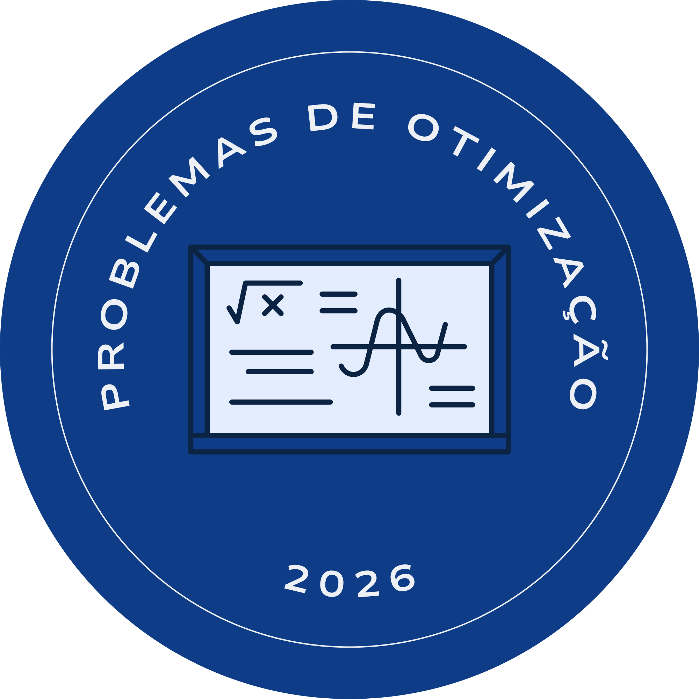

Problemas de Otimização
Você já pensou em como seria incrível se a gente conseguisse descobrir, sem quebrar a cabeça, a decisão perfeita para economizar espaço, gastar menos ou lucrar mais em qualquer situação?

O Que São Problemas de Otimização?
Situações em que queremos encontrar o melhor valor possível de uma quantidade como o maior lucro, o menor custo ou a maior área, sujeita a uma restrição. As derivadas nos dizem exatamente onde uma função "para de crescer" (máximo) ou "para de cair" (mínimo): isso ocorre nos pontos onde $f'(x) = 0$.
Função Objetivo
A quantidade que queremos maximizar ou minimizar — área, lucro, custo. Expressa como $f(x)$.
Restrição
O que limita nossa liberdade — perímetro fixo, orçamento, material disponível. Reduz variáveis a uma só.
Ponto Crítico
Onde $f'(x) = 0$ — a tangente é horizontal. Confirmamos máximo se $f''(x) < 0$, mínimo se $f''(x) > 0$.
A derivada $f'(x)$ mede a taxa de variação instantânea. Quando $f'(x) > 0$, a função cresce; quando $f'(x) < 0$, decresce. O ponto onde $f'(x) = 0$ é onde a função "vira": máximos e mínimos vivem ali. Para confirmar: $f''(x) < 0$ indica máximo, $f''(x) > 0$ indica mínimo.
No caso do canil: queremos maximizar $A = xy$, mas somos limitados pelo perímetro fixo $2x + 2y = 20$. Isso nos permite escrever $y = 10 - x$, transformando um problema de duas variáveis em função de uma só — que sabemos resolver com derivadas!
Substituindo $y = 10 - x$, obtemos $A(x) = x(10 - x) = 10x - x^2$. É uma parábola de concavidade para baixo ($a < 0$), garantindo um único máximo global. O vértice ocorre em $x = -b/(2a) = -10/(2 \cdot (-1)) = 5$.
Explore o Problema
Você tem 20 metros de cerca e quer construir um cercado retangular para o cachorro Bob. Como distribuir esse perímetro para obter a maior área possível?
Resolução Matemática Completa
Veja o passo a passo rigoroso que transforma a descrição verbal do problema em uma prova matemática de que o quadrado é a solução ótima.
Variáveis e Restrição
Chamamos de $x$ a largura e $y$ o comprimento do cercado. O perímetro é fixo em 20 metros:
Função Objetivo
A área do cercado é o produto dos lados. Substituímos $y$ pela expressão encontrada:
Primeira Derivada
Calculamos $A'(x)$ para encontrar a taxa de variação da área:
Ponto Crítico
Igualamos a derivada a zero para encontrar onde a área para de crescer:
Teste da Segunda Derivada
A segunda derivada confirma que $x = 5$ é um máximo (e não mínimo):
Como $A''(x)$ é negativa para todo $x$, o ponto crítico é um Máximo Global.
Resultado Ótimo ✓
Substituindo $x = 5$ para encontrar $y$ e a área máxima:
O cercado de área máxima é um quadrado de 5m × 5m. A simetria não é coincidência: é a matemática sendo elegante!
Desigualdade das Médias
Antes do Cálculo existir, matemáticos já resolviam otimização com elegância pura, sem uma única derivada.
A média geométrica $\sqrt{ab}$ é sempre menor ou igual à média aritmética $\frac{a+b}{2}$, para quaisquer $a, b > 0$.
O máximo (ou mínimo) acontece exatamente quando as variáveis são iguais. Esse fato resolve uma série de problemas clássicos sem derivar uma única vez.
Generalização AM GM
Para $n$ termos positivos: $\sqrt[n]{x_1 \cdots x_n} \leq \frac{x_1 + \cdots + x_n}{n}$, com igualdade sse $x_1 = \cdots = x_n$.
Interpretação Geométrica
Entre todos os retângulos com perímetro fixo, o quadrado tem a maior área. Em $n$ dimensões: o $n$-cubo tem o maior volume.
Elegância vs. Generalidade
AM GM traz soluções mais diretas quando a estrutura do problema encaixa. O Cálculo Diferencial é mais geral e sistemático.
Tome um segmento $AC$ de comprimento $a + b$, com ponto $D$ entre $A$ e $C$ tal que $AD = a$ e $DC = b$. Construa uma semicircunferência de diâmetro $AC$ e trace a perpendicular a $\overleftrightarrow{AC}$ pelo ponto $D$. Seja $B$ a interseção da semicircunferência com essa perpendicular.
Os triângulos $\triangle ABD$ e $\triangle BCD$ são semelhantes (critério ângulo-ângulo), portanto: $$\frac{AD}{BD} = \frac{BD}{DC} \implies BD = \sqrt{ab}$$ Como $BD \leq \frac{AC}{2} = \frac{a+b}{2}$, a desigualdade fica demonstrada. A igualdade ocorre quando $D$ é o ponto médio de $AC$, ou seja, quando $a = b$.
A desigualdade se generaliza: dado qualquer conjunto $\{x_1, \ldots, x_n\} \subset \mathbb{R}^+$, $$\sqrt[n]{x_1 \cdots x_n} \;\leq\; \frac{x_1 + \cdots + x_n}{n}$$ com igualdade se e somente se $x_1 = x_2 = \cdots = x_n$.
Interpretação geométrica: entre todos os ortotonos (paralelepípedos $n$-dimensionais) com volume fixo, o $n$-cubo tem a menor soma dos comprimentos das arestas.
Problemas Clássicos
AM GM e Cálculo chegam à mesma solução — cada um com sua elegância.
Triângulo Retângulo de Maior Área
Catetos $x, y$ com soma fixa $x + y = S$. Maximizar $A = \frac{xy}{2}$.
Cone Inscrito numa Esfera
Esfera de raio $R$. Inscrever o cone de volume máximo.
Cilindro Inscrito num Cone
Cone de raio $R$, altura $H$. Inscrever o cilindro de volume máximo.
Caixa Aberta de Volume Máximo
Folha $a\times a$: cortar cantos de lado $x$ e dobrar para maximizar volume.
Paralelepípedo Inscrito numa Esfera
Esfera de raio $R$. Paralelepípedo inscrito com $x_1^2+x_2^2+x_3^2=4R^2$.
Quiz
Teste sua compreensão sobre derivadas e problemas de otimização.